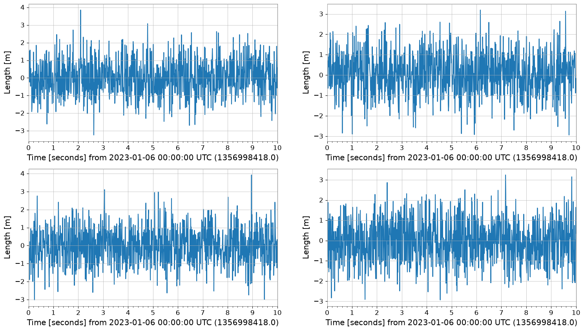
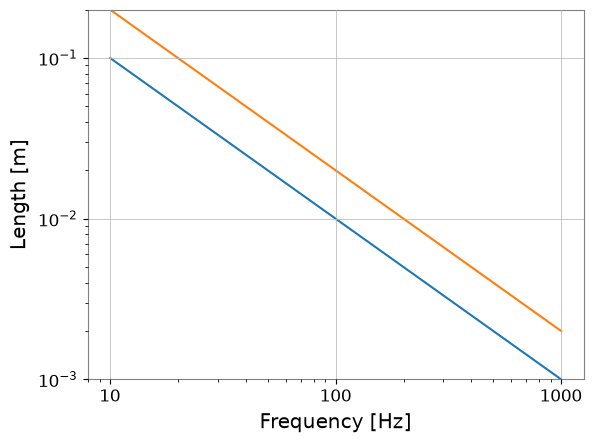
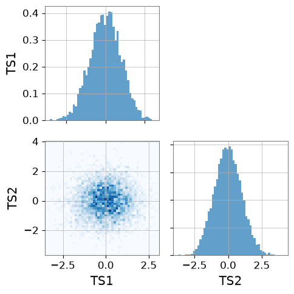

Note
This page was generated from a Jupyter Notebook. Download the notebook (.ipynb)
[1]:
# Skipped in CI: Colab/bootstrap dependency install cell.
Plotting: Basics

This notebook introduces the enhanced plotting capabilities of gwexpy. We demonstrate the “nice” default settings (automatic figsize adjustment, logarithmic axes, layout, axis labels) for matrix data structures such as TimeSeriesMatrix and FrequencySeriesMatrix, as well as collections like SpectrogramList.
[2]:
import warnings
warnings.filterwarnings("ignore", category=UserWarning)
warnings.filterwarnings("ignore", category=DeprecationWarning)
import matplotlib.pyplot as plt
import numpy as np
from astropy import units as u
from gwexpy.frequencyseries import (
FrequencySeries,
FrequencySeriesList,
FrequencySeriesMatrix,
)
from gwexpy.spectrogram import Spectrogram, SpectrogramList
from gwexpy.timeseries import TimeSeries, TimeSeriesMatrix
# Fix random seed
np.random.seed(42)
1. TimeSeriesMatrix Plotting
TimeSeriesMatrix manages time series data with a 3-dimensional structure (Row, Col, Time). When calling .plot(), the following optimizations are applied:
Axis Labels: “Time [s]” or “Time [s] from …” is automatically set by
determine_xlabel.Auto-GPS: For time axes, the
auto-gpsscale is applied by default to properly handle GPS time (large offsets).Layout: The
figsizeis automatically adjusted according to the row and column structure.
[3]:
# Create a 2x2 TimeSeriesMatrix
# 10 seconds from GPS time (e.g., 1356998418 = 2023-01-01 00:00:00 UTC)
t0 = 1356998418.0
times = t0 + np.linspace(0, 10, 1000)
data = np.random.randn(2, 2, 1000)
# Rows: Sensor A, B / Cols: Axis X, Y
tsm = TimeSeriesMatrix(
data,
times=times,
unit="m",
name="Velocity",
rows=["Sensor A", "Sensor B"],
cols=["X-axis", "Y-axis"],
)
# Plot
plot = tsm.plot()
plot.show()

2. FrequencySeriesMatrix Plotting
FrequencySeriesMatrix manages frequency data with a 3-dimensional structure (Row, Col, Frequency). It typically holds results from spectral analysis. Features of .plot():
Logarithmic Axes: The X-axis (frequency) and Y-axis (amplitude) are automatically set to logarithmic scale depending on conditions such as data size.
Axis Labels: “Frequency [Hz]” and “[unit]” are automatically set.
[4]:
# Create FrequencySeriesMatrix
# From 10Hz to 1kHz
f = np.logspace(1, 3, 500)
# Generate 1/f noise-like data
data = np.zeros((2, 2, 500))
for i in range(2):
for j in range(2):
data[i, j, :] = 10 / f * (1 + 0.1 * np.random.randn(500)) + (i + j)
# unit='m' (simplified here, though for Amplitude Spectral Density it would be m/sqrt(Hz))
fsm = FrequencySeriesMatrix(
data,
frequencies=f,
unit="m",
name="Displacement",
rows=["Sensor A", "Sensor B"],
cols=["X-axis", "Y-axis"],
)
# Plot
# Verify that it automatically becomes a log-log plot
plot = fsm.plot()
plot.show()

3. FrequencySeriesList Plotting (Reference)
FrequencySeriesList (or Dict) is a simple list without a grid structure. It can also be plotted in the same way.
[5]:
# Create FrequencySeriesList
fs1 = FrequencySeries(1 / f, frequencies=f, unit=u.m, name="Series 1")
fs2 = FrequencySeries(2 / f, frequencies=f, unit=u.m, name="Series 2")
fs_list = FrequencySeriesList([fs1, fs2])
fs_list.plot();

[6]:
del times, data, tsm, fsm, fs1, fs2, fs_list
import gc
gc.collect()
[6]:
16844
4. SpectrogramList Plotting
Plotting of SpectrogramList applies a vertical layout with geometry=(N, 1) by default, along with a logarithmic colorbar. Since spectrograms also have a time axis, the auto-gps feature works when GPS time is provided.
[7]:
# Create Spectrogram
# Use the same GPS time as TimeSeriesMatrix
t = t0 + np.linspace(0, 10, 100)
# 10Hz - 1000Hz
f = np.logspace(1, 3, 50)
spec_list = SpectrogramList(
[
Spectrogram(
np.random.rand(100, 50), times=t, frequencies=f, unit=u.count, name="Spec 1"
),
Spectrogram(
np.random.rand(100, 50) * 10,
times=t,
frequencies=f,
unit=u.count,
name="Spec 2",
),
]
)
spec_list.plot();

4. Adaptive Plotting Optimization (Decimation)
When plotting a TimeSeries with a large amount of data, decimation (Min-Max Decimation) is automatically applied to maintain rendering performance.
Automatic Application: By default, it is triggered when the number of samples exceeds 50,000.
Peak Preservation: The Min-Max algorithm reduces the number of data points (default ~10,000 points) while preserving the waveform envelope (maximum and minimum).
Customization: Can be controlled with the
decimate_thresholdanddecimate_pointsarguments.
[8]:
# Generate data with 100,000,000 samples
ts_large = TimeSeries(np.random.randn(100000000), sample_rate=1024, name="Large TS")
print(f"Original samples: {len(ts_large)}")
# Execute plot (decimation is automatically applied)
plot_opt = ts_large.plot()
# Verify the number of plotted points
ax = plot_opt.gca()
line = ax.get_lines()[0]
print(f"Plotted points: {len(line.get_xdata())}")
plot_opt.show();
Original samples: 100000000
Plotted points: 10000

Application to Collections/Matrices and Parameter Specification
It also works transparently with TimeSeriesList and TimeSeriesMatrix. You can also force it to apply by lowering the threshold.
[9]:
# Example of lowering the threshold to 10,000 and specifying 2,000 plot points
ts_med = TimeSeries(np.random.randn(20000), sample_rate=16384, name="Medium TS")
plot_custom = ts_med.plot(decimate_threshold=10000, decimate_points=2000)
ax = plot_custom.gca()
print(f"Original: {len(ts_med)}, Plotted: {len(ax.get_lines()[0].get_xdata())}")
plot_custom.show();
Original: 20000, Plotted: 2000

5. Spectrogram Summary Plotting
plot_summary is a feature that vertically arranges multiple Spectrogram objects and plots FrequencySeries statistics (10%, 50%, 90% percentiles) on the right side of each. This is very useful when checking the time evolution of spectrograms alongside their overall frequency characteristics.
Automatic Synchronization: The color axis of the spectrogram and the vertical axis of the FrequencySeries are automatically synchronized.
MMM Plot: Uses
plot_mmmto display Min/Median/Max (or any percentiles) with shaded areas.
[10]:
from gwexpy.spectrogram import SpectrogramDict
from gwexpy.timeseries import TimeSeries
# Generate test data
def make_sg(name):
ts = TimeSeries(np.random.randn(2048 * 10), sample_rate=2048, name=name, unit="m")
return ts.spectrogram(stride=1, fftlength=1, overlap=0.5)
sg_dict = SpectrogramDict({"Channel A": make_sg("A"), "Channel B": make_sg("B")})
# Execute ASDgram plot
fig, axes = sg_dict.plot_summary(fmin=10, fmax=500, title="ASDgram Demonstration")
plt.show();

6. PairPlot Example
Below is a basic usage example of gwexpy.plot.PairPlot.
Create two
TimeSerieswith different sampling ratesPairPlotautomatically resamples to the minimum sample rate and trims to the common intervalWith
corner=True(default), only the lower-left triangle is drawn
When executed, histograms appear on the diagonal and 2D histograms on the off-diagonal.
[11]:
import numpy as np
from gwexpy.plot import PairPlot
from gwexpy.timeseries import TimeSeries
# Create two TimeSeries with different sampling rates
ts1 = TimeSeries(np.random.randn(5000), sample_rate=1024, name="TS1")
ts2 = TimeSeries(np.random.randn(4000), sample_rate=2048, name="TS2")
# Create PairPlot (corner=True is default)
pair = PairPlot([ts1, ts2], corner=True)
# Display
pair.show()

[11]:
<gwexpy.plot.pairplot.PairPlot at 0x7f7c6de452d0>